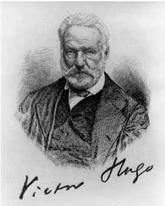

LỜI GIỚI THIỆU

ictor Hugo là nhà văn lãng mạn lớn nhất của nước Pháp, thế kỷ XIX. Cuộc đời chiến đấu không ngừng của ông, những tác phẩm văn chương của ông phản ánh trung thành những biến cố lịch sử lớn lao, những cuộc cách mạng của nhân dân Pháp suốt thế kỷ XIX. Tác phẩm của ông tiêu biểu cho ý chí tự do, lòng tha thiết yêu hòa bình, lòng tin tưởng cao cả vào con người lao động. Bởi vậy, ngày nay ở mọi nước, người ta đều công nhận Victor Hugo là một nhà văn tiến bộ không những của nước Pháp mà còn là của toàn thể nhân loại.

Năm 1952, nhân dân khắp thế giới đã tổ chức long trọng lễ kỷ niệm ngày sinh nhật lần thứ 150 của Hugo tại Viên, thủ đô nước Áo. Tác phẩm của ông đã được dịch ra rất nhiều thứ tiếng trên thế giới.
Victor Mari Hugo sinh ngày 26 tháng 2 năm 1802 ở Besançon , một tỉnh nhỏ ở miền Đông nước Pháp.
Bố ông là một sĩ quan cao cấp thời kỳ Napoléon đệ nhất. Mẹ ông thuộc một gia đình theo chủ nghĩa quân chủ và ngoan đạo. Lúc còn nhỏ, Hugo sống với mẹ, chịu ảnh hưởng tư tưởng của mẹ. Nhưng từ thời thơ ấu, ông đã ở Paris “quê hương” của ông, quê hương của cách mạng Pháp, nên ông sớm hấp thụ những tư tưởng cách mạng, tinh thần dân chủ. Những năm còn nhỏ tuổi, Hugo theo bố mẹ sang Ý rồi sang Tây Ban Nha. Cảnh vật chói lọi ở những nước này sẽ để lại trong thơ văn của ông những hình ảnh tươi sáng, những kỷ niệm sâu sắc. Từ năm lên mười, Hugo ở hẳn Paris, học tại trường trung học Louis-le-Grand (1816-18). Năm mười bốn tuổi, Hugo bắt đầu làm nhiều thơ, năm mười lăm tuối được giải thưởng thơ của Viện Hàn lâm Pháp. Năm mười bảy tuổi, ông bỏ học để chuyên sáng tác.
Những tác phẩm đầu tiên của ông gợi lại thời kỳ Trung cổ phong kiến, biểu hiện tư tưởng quân chủ rõ nét, những đồng thời cũng đã có mầm mống của tư tưởng nhân đạo, chống đối lại chế độ nô lệ lúc bấy giờ.
Từ 1820 đến 1830, Hugo liên lạc với nhóm nhà văn lãng mạn và trở nên lãnh tụ của nhóm này. Ông mang hết thiên tài lỗi lạc và trái tim nồng nhiệt đấu tranh cho một nền văn học mới, tự do, chống đối lại thứ nghệ thuật gò bó, giả tạo của chủ nghĩa cổ điển lúc ấy đã lỗi thời. Năm 1827, ông viết vở kịch Cromwell; bài tựa của vở này được coi như bản tuyên ngôn của phái lãng mạn. Hugo chủ trương phá bỏ tất cả những luật lệ cổ điển, khắt khe và đòi hỏi phải tôn trọng hiện thực, đòi hỏi tự do tưởng tượng. Vở kịch d'Hernani, diễn năm 1830, gây ra những cuộc chiến đấu và những cuộc tranh luận kịch liệt giữa phái cũ và phái mới. Nghệ thuật lãng mạn hoàn toàn thắng lợi. Trên những nguyên tắc hoàn toàn mới về kịch, Hugo viết một loạt những vở kịch lãng mạn: "Marion de Lorme" (1829) Lucrèce Borgia (1833),Marie Tudor (1833) và đặc biệt Ruy Blas (1838). Ông đưa lên sân khấu những hoàn cảnh vĩ đại, những con người đầy nhiệt huyết, những mâu thuẫn gay gắt nóng bỏng, những trái tim nồng cháy. Người ta chú ý nhất đến vở Ruy Blas, trình bày nhân vật chính là một người đầy tớ có tâm hồn cao thượng và yêu tha thiết hoàng hậu Tây Ban Nha. Đó là cả một cuộc cách mạng về quan niệm kịch của Hugo, trái hẳn lại với quan niệm kịch cổ điển.
Từ sau 1830, bắt đầu một giai đoạn mới trong cuộc đời, cũng như trong sáng tác của Hugo.
Phong trào cách mạng Pháp càng ngày càng mạnh mẽ. Từ 1830 đến 1832 tại một số thành phố lớn ở Pháp, nhất là Paris và Lyon, nhân dân lao động nổi dậy chống chính quyền tư sản phản động, Hugo có cảm tình đặc biệt với phong trào cách mạng. Trong bài tựa cuốn Lucrèce Borgia (1833), ông tuyên bố nhà văn phải “sáng tác đồng thời với đấu tranh chính trị”.
Từ 1830, Hugo không ngừng sáng tác và không ngừng tích cực tham gia đâu tranh chính trị. Phái lãng mạn thành hình từ 1810, đã có sự chia rẽ: một bên chủ trương nghệ thuật vì nghệ thuật, đứng đầu là Têôphin Gôchiê; một bên chủ trương nghệ thuật phục vụ dân sinh; Victor Hugo là người sáng lập ra dòng sau này. Đến năm 1859, ông viết cho thi sĩ Baudele: “Không bao giờ tôi chủ trương nghệ thuật vì nghệ thuật; bao giờ tôi cũng nói: nghệ thuật phải phục vụ cho tiến bộ”. Hugo viết để phục vụ đấu tranh, phục vụ quần chúng. Trong tư tưởng của ông, đã có một chuyển hướng quyết định. Chế độ phản động của Louis XVIII, cuộc cách mạng 1830, 1832 là những nguyên nhân sâu sắc của sự chuyển biến trong tư tưởng của nhà văn.
Năm 1831, ông viết cuốn tiểu thuyết lịch sử vĩ đại Nhà thờ Đức bà Paris (Notre-Dame de Paris (1831), một cuốn tiểu thuyết lãng mạn tích cực điển hình. Ông đả kích kịch liệt bọn quý tộc, đề cao tấm lòng cao thượng, trong sáng của người bình dân. Cũng năm 1831, ông xuất bản tập thơ Lá Thu les Feuilles d'automne (1831), trong đó ông viết: “Ta yêu tự do vì hoa trái của Tự do”. Từ 1830 đến 1840, các tập thơ của ông đều thấm nhuần lòng xót thương thấm thía những kẻ khốn cùng, lòng tin tưởng vào sức mạnh của nhân dân, lòng hy vọng vào tương lai loài người. Trong tập Ngày cuối cùng của người tội nhân (1829) và trong truyện ngắn Cơlốtđơ, thằng cùng, Hugo phản đối thống thiết tội tử hình trong luật pháp lúc bấy giờ.
Vào khoảng 1840, Hugo bỗng nhiên ngả về phái hữu. Ông bênh vực chế độ quân chủ chuyên chế, bên vực tên trùm tư sản Lous Phillippe, chống lại tư tưởng dân chủ. Năm 1841, ông được bầu vào Hàn lâm viện Pháp và năm 1845 được phong bá tước.
Nhưng sau 1848, trước sự phản bội của bọn quý tộc và bọn đại tư sản, Hugo trở nên chiến sĩ số một của tự do, dân chủ, của chế độ Cộng hòa Pháp, cho đến ngày cuối cùng. Từ cuộc đảo chính ngày 2 tháng chạp 1851, lật đổ chế độ cộng hòa, Hugo phải đày ra nước ngoài, thoạt tiên ở Bỉ, rồi ra đảo Giêcxây và Ghécnơxây suốt thời gian mười tám năm trời dưới chế độ đế chế thứ II. Ông cực lực chống lại Napoléon III. Thời kỳ này ông sáng tác những tập thơ và những bộ tiểu thuyết có giá trị nhất. 1852, ông viết Napoléon tiểu đế và xuất bản tập thơ Trừng phạt năm 1953; ông lên án gay gắt sự phản bội, sự áp bức của triều đình Napoléon III. “Người ta biết Hugo rời bỏ nước Pháp và từ những hòn đảo của Anh Cát Lợi trong biển Măngsơ ông đã nhóm ngọn lửa đấu tranh chống Napoléon tiểu đế” (Aragông: Bạn đã đọc Victor Hugo chưa?). Hugo thực sự đã trở thành một một chiến sĩ cách mạng, mang cả cuộc đời mình, thiên tài của mình để phục vụ cách mạng. Những tập thơ trên mở đầu cho giai đoạn thứ ba trong sự nghiệp sáng tác của ông.
Trong thời kỳ ở đảo Guernsey, Hugo viết mấy bộ tiểu thuyết lớn: Những người khốn khổ (viết xong năm 1861), Những người lao động ở biển (Travailleurs de la Mer 1866) và đoạn đầu tập thơ Thiên anh hùng ca của nhân loại (1857 – 1883).
Những người khốn khổ là một cuốn tiểu thuyết xã hội hiện đại, một thiên anh hùng ca bằng văn xuôi. Hugo diễn tả cuộc đời trăm ngàn khổ cực và tâm hồn vô cũng cao thượng của một người tù khổ sai là Jean Valjean, của một thiếu phụ bị xã hội tư bản tàn bạo chà đạp là Fantine, của một trẻ thơ anh dũng là Gavroche. Trong cuốn tiểu thuyết vĩ đại này, Hugo đứng hẳn về phía quần chúng, khi mô tả cuộc chiến đấu hùng tráng của nhân dân cần lao Paris nổi dậy năm 1832 chống lại chính quyền phản động lúc bấy giờ.
Trong bộ tiểu thuyết Những người lao động ở biển, Hugo mô tả cuộc đấu tranh của chàng đánh cá Gilliatt với biển cả và sự hy sinh cao quý của chàng cho hạnh phúc của người chàng yêu tha thiết Déruchette.
Thiên anh hùng ca của nhân loại gồm những bài thơ hào hùng ca ngợi sự tiến bộ của loài người từ bóng tối nguyên thủy tiến lên một tương lai rực rỡ.
Năm 1859, Napoléon III ân xá cho Hugo, nhưng Hugo không chịu trở về nước Pháp. Ông nói: “Giữ tròn lời thề với lương tâm, tôi chịu đến cũng số phận của Tự do. Tự do đã bị trục xuất khỏi đất Pháp, khi nào Tự do trở về đất nước, tôi sẽ trở về cũng với Tự do”.
Năm 1870, đế chế thứ III sụp đổ, Hugo trở về Paris. Tuy đứng về lý tưởng xã hội, ông không tán thành Công xã Paris, nhưng ông thông cảm sâu sắc với giai cấp công nhân nổi dậy làm cách mạng và khâm phục họ. Sau khi phong trào bị dập tắt, ông đứng dậy phản kháng những sự trả thù, khủng bố trắng trợn của bọn thống trị phản động. Ông đòi ân xá cho tất cả những người tham gia Công xã và cho một số người trốn ở nhà ông tại Bỉ. Cuộc cách mạng vĩ đại này là nguồn cảm hứng cho một tập thơ có giá trị lớn của ông là tập Năm khủng khiếp (1870 – 1871). Ở đây, thi hào ca ngợi con người vô sản đứng lên làm cách mạng và kết án những kẻ nhúng tay vào biển máu để trả thù những người yêu nước. Năm 1874, ông hoàn thành cuốn tiểu thuyết Chín mươi ba (Quatrevingt-treize, 1874), bắt đầu viết từ những năm còn ở ngoài đảo. Ông mô tả lại cuộc cách mạng 1789 – 1794, coi đó như một sự kiện lớn nhất trong lịch sử thế giới hiện đại.
Những năm cuối cùng, ông viết Nghệ thuật làm ông ( L'art d'être grand-père (1877), đầy tình thương yêu trẻ con và hoàn thành tập thơ Thiên anh hùng ca của nhân loại.
Victor Hugo mất ngày 22 tháng 5 năm 1885, được toàn thể nhân dân Pháp thương tiếc. Ngày đưa tang ông được coi như ngày quốc tang. Những cựu chiến sĩ cách mạng Công xã Paris kêu gọi mọi người tưởng nhớ đến nhà đại văn hào đã hết lòng ủng hộ những người lao động tham gia Công xã.
Cuộc đời của Hugo nằm suốt cả trong thời kỳ bão táp của cách mạng Pháp và của châu Âu, thế kỷ XIX. Ông sinh trước ngày đế chế thành lập và chết sau Các Mác hai năm. “Tác phẩm của ông ra đời trên đống gạch đổ nát của ngục Bastille và chấm dứt khi những nghiệp đoàn thợ thuyền sắp sửa tuyên bố rằng mùa xuân sẽ thuộc về họ ngày 1 tháng 5 tại Chicago. Victor Hugo là tâm gương phản chiếu cách mạng Pháp”. (Aragon: sđd)
Quả vậy Hugo đã tiến từ xu hướng quân chủ đến tư tưởng dân chủ xã hội, từ nghệ thuật lãng mạn đến xu hướng hiện thực. Cuộc đời và tác phẩm của ông tiêu biểu cho cuộc phấn đấu không ngừng cho cách mạnh, cho tự do dân chủ, cho hòa bình hữu nghị các dân tộc.
Năm 1849, ở Đại hội quốc tế lần thứ nhất, những người Bạn của Hòa bình họp tại Paris, Hugo có nói: “Tư tưởng hòa bình là ở khắp thế giới, là tài sản của tất cả các dân tộc, mọi người đòi hỏi hòa bình vì hòa bình là hạnh phúc tối cao của họ”. Hugo đã hết sức bênh vực cho Giôn Brao, người lãnh tụ phong trào đòi hỏi tự do cho người da đen ở Mỹ, bị chính phủ Mỹ kết án tử hình. Hugo ủng hộ cuộc cách mạng ở Iếchlăng, ủng hộ nhân dân đảo Síp khởi nghĩa chống bọn thống trị Thổ Nhĩ Kỳ, ủng hộ cuộc khởi nghĩa của nhân dân Cuba chống bọn thực dân Tây Ban Nha.
Là lãnh tụ của phái lãng mạn, ông luôn trung thành với những tư tưởng lãng mạn tích cực, chống đối lại xu hướng lãng mạn tiêu cự, thoát ly. Ông chế giễu bọn nhà văn hô hào nghệ thuật thuần túy và đòi cho được nghệ thuật phải phục vụ chân lý, phản ánh thực tế. Hugo đề ra nhiệm vụ của nghệ thuật là phải phục vụ lợi ích của nhân dân; sức mạnh của văn chương là ở mối liên hệ chặt chẽ với nhân dân.
Chủ nghĩa lãng mạn của Hugo thấm nhuần tinh thần nhân đạo chủ nghĩa. Nó rất gần chủ nghĩa hiện thực, Aragông gọi Hugo là “nhà thơ hiện thực”. Tác phẩm của Hugo phản ánh đời sống cùng cực của nhân dân dưới chế độ tư bản, phản ánh tâm địa xấu xa bỉ ổi của bọn quý tộc, bọn tư sản thống trị của thời đại. Tác phẩm của ông cũng mô tả được những con người lao động vùng dậy làm cách mạng.
Tuy vậy, cũng phải thấy ngay rằng Victor Hugo chịu ảnh hưởng nặng của tôn giáo và mức tư tưởng cao nhất của ông là một thứ chủ nghĩa xã hội không tưởng kiểu của Xanh Ximông, Phuriê hồi đầu thế kỷ XIX. (Saint Simon (1760 – 1825) là một nhà nghiên cứu khoa học, người Pháp, có lòng yêu tha thiết loài người, căm ghét bọn quý tộc địa chủ và bọn tư sản đầu cơ. Ông chủ trương cải tạo xã hội tư sản và xây dựng xã hội không có người bóc lột người, nhưng Saint Simon chưa thấy rõ những mâu thuẫn của giai cấp trong xã hội tư bản nên chủ trương của ông đi đến thất bại hoàn toàn. Charles Fourter (1772 – 1837) là một nhà kinh tế học người Pháp, lên án kinh doanh vô tổ chức trong kinh tế tư bản. Ông bênh vực thợ thuyền là “người làm ra tất cả mà chịu sống đời sống khổ cực”. Ông chủ trương một nền kinh tế có kế hoạch, nhưng thủ tiêu đấu tranh giai cấp, nên cũng chỉ đi đến thất bại.) Thế giới quan của ông, bởi thế, bị hạn chế rất nhiều. Ông không nhận định được qui luật phát triển của xã hội. Ông tin tưởng rằng chỉ có tư tưởng mới có thể giải phóng được loài người. Bởi vậy những nhân vật ông xây dựng thường là những nhân vật có tâm hồn cao thượng, đầy lòng hy sinh nhưng ít chiến đấu tính. Tiểu thuyết của ông thường có những đoạn lý thuyết về luân lý, đạo đức, tôn giáo. Ông rất sợ những cuộc cách mạng đổ máu.
Cuộc đời Victor Hugo là cuộc đời đấu tranh không ngừng cho chính nghĩa, cho tự do, hòa bình, dân chủ. Tác phẩm của ông thấm nhuần tư tưởng nhân văn chân chính.
Ngày nay, nhân dân các nước rất ham đọc tác phẩm của Victor Hugo. Ở Pháp, cách đây ít lâu, báo Nhân đạo đã đăng lại bộ tiểu thuyết Những người khốn khổ có minh họa. Trong thời gian phát xít Đức chiếm đóng nước Pháp, một đội du kích Pháp đã lấy tên Gavơrốt làm tên đội.
Ở Việt Nam trước kia đã có nhiều người dịch thơ của Hugo và Nguyễn Văn Vĩnh đã dịch bộ “Những người khốn khổ” với nhan đề bản dịch “Những kẻ khốn nạn”.
Những người khốn khổ là một bộ truyện lớn nhất mà cũng là một tác phẩm có giá trị nhất trong sự nghiệp văn chương của Victor Hugo. Ông suy nghĩ về tác phẩm này và viết nó trong ngót ba mươi năm và hoàn thành năm 1861.
Ngay từ năm 1829, Hugo đã có ý định viết một cuốn tiểu thuyết về người tù khổ sai. Sau 1830, Hugo đặc biệt chú ý đến những vấn đề xã hội, nhận xét những bất công trong xã hội. Ông nhận thấy những kẻ tội phạm, những con người tư bản tàn ác. Ông tin tưởng rằng những con người ấy có thể cải tạo được bằng đường lối giáo dực nhân đạo. Ông nhận thức được rõ ràng nhiệm vụ cao quý của nhà văn là phải góp phần cải tạo xã hội, đấu tranh cho tự do, hạnh phúc của loài người.
Cũng vào những năm 1830, trước phong trào đấu tranh mạnh mẽ của nhân dân lao động, một phong trào viết tiểu thuyết xã hội dâng cao ở Pháp, Gioócgiơ Xăng cho ra đời cuốn Lêlia, năm 1832; năm 1842, Ơgien Xuy đăng tập truyện Bí mật thành Paris.
Victor Hugo bắt tay vào công việc sưu tầm tài liệu và bắt đầu viết bộ tiểu thuyết này, thoạt đầu gọi là Những cảnh cùng khổ, vào năm 1840. Năm 1854, Những cảnh cùng khổ đổi thành Những người khốn khổ. Sau một thời gian gián đoạn, Hugo hoàn thành bộ truyện năm 1861. Đến năm 1862 thì bộ truyện xuất bản đồng thời ở Brussel (Bỉ) và ở Paris. Trong bốn tiếng đồng hồ đầu tiên ngày phát hành tập I, đã bán tới 3.500 cuốn.
Những người khốn khổ là bức tranh của một xã hội. Nó đề cập đến những vấn đề lớn lao trong xã hội Pháp đầu thế kỷ XIX, mà cũng là của tất cả các xã hội tư sản. Đó là một bản hùng ca của thời đại. Victor Hugo sau khi hoàn thành bộ tiểu thuyết này đã nói: “Quyển truyện này là một trái núi”. Quả thế, “một trái núi”, không những vì số trang của nó, vì những vấn đề to lớn nó bàn tới, mà chính là vì nó thấm nhuần những tư tưởng nhân đạo, vì nó ca ngợi đạo đức cao cả của nhân dân lao động, ca ngợi tự do, dân chủ, chống lại cường quyền áp bức, bóc lột. Đó là lòng thương cảm sâu xa đối với những con người bị xã hội chà đạp, lòng tin vào tâm hồn cao thượng của họ. Giăng VanGiăng bị xã hội tư sản bóp nghẹt, chăng lưới bao vây, lùng bắt cho đến chết, vẫn sống một cuộc sống hy sinh cao quý vì những kẻ bị xã hội ruồng bỏ. Phăngtin bị xã hội đạp xuống, vẫn là một tâm hồn thanh cao, là một tấm gương sáng của tình mẹ con. Gavơrốt là một đứa trẻ bị vứt bên lề đường Paris, vẫn là một tâm hồn thơ ngây, yêu đời, dũng cảm, nghĩa hiệp. “Những người khốn khổ còn là một bài ca phản kháng đối với cái trật tự của xã hội tư sản, nó đè bẹp những người nghèo khổ như là một thứ “định mệnh nhân tạo” và biến những người vì miếng cơm manh áo làm tên lính bảo vệ nó, thành những cái máy mù quáng, tàn nhẫn.
Những người khốn khổ là một tác phẩm chan chứa tinh thần lãng mạn cách mạng. Hugo là một nhà văn lãng mạn. Ông thường dùng phương pháp xây dựng những hình tượng to lớn để mô tả những tâm hồn siêu việt, những đột biến cao cả trong lòng người, gây những ấn tượng hùng vĩ cho người đọc. Những nhân vật chính diện đều sáng ngời đức hào hiệp, hy sinh.
Những người khốn khổ còn ghi lại những nét hiện thực về xã hội Pháp vào khoảng 1830. Cái xã hội tư sản tàn bạo được phản ánh trong những nhân vật phản diện như Giave, Tênácđiê. Tình trạng cùng khổ của người dân lao động cũng được mô tả bằng những cảnh thương tâm của một người cố nông sau trở thành tù phạm, một người mẹ, một đứa trẻ sống trong cảnh khủng khiếp của cuộc đời tối tăm, ngạt thở. Dưới ngòi bút của Hugo, Paris ngày cách mạng 1832 đã sống dậy, tưng bừng, anh dũng, một Paris nghèo khổ nhưng thiết tha yêu tự do.
Ưu điểm lớn nhất của Hugo là khi diễn tả xã hội tư sản, ông không chỉ diễn tả một số nhân vật độc ác, tàn nhẫn, vô lương tâm mà ông trình bày chế độ như một thực thể nhất trí trong việc áp bức, bóc lột, ruồng rẫy những người cùng khổ, đè lên người họ như một thứ định mệnh khốc liệt với các thứ công cụ ghê tởm như tòa án, tổ chức cảnh binh, quân đội, nhà tù, với báo chí, dư luận, thành kiến, tập quán.
Trong Lời nói đầu bọ Những người khốn khổ, Hugo đã nhấn mạnh ý nghĩa sâu xa của tác phẩm. Ông nói rằng trong cái xã hội văn minh ngày nay mà còn những địa ngục đày đọa con người thì “những quyển sách như loại này còn có thể có ích”. Với quan niệm nghệ thuật phục vụ đời sống như vậy, Hugo đã sáng tạo có ý thức một tác phẩm có ảnh hưởng lớn trong công cuộc đấu tranh chung của loài người chống áp bức và bóc lột.
Nhưng cũng như tất cả những người chưa nắm được chủ nghĩa xã hội khoa học, con đường thoát của xã hội mà ông tưởng tượng ra rất là duy tâm, không tưởng. Lý tưởng của ông là làm sao cho con người được như giám mục Mirien quên mình như kẻ nghèo khổ, như ông Mađơlen (Giăng VanGiăng) kinh doanh công nghiệp để cho thợ có chỗ làm ăn, tiền lời dùng một phần quan trọng vào việc cải thiện đời sống cho thợ, tổ chức y tế, cứu tế trong xưởng, đề cao thuần phong mỹ tục. Làm sao cho con người trở nên tốt như thế? Ông Mirien toàn thiện là nhờ đức tin, Giăng VanGiăng trở nên tốt cũng là nhờ sự cảm hóa của Chúa, gián tiếp qua ông Mirien. Giăng VanGiăng là một điển hình nạn nhân của xã hội khi anh nghèo đói, khi anh bị tù tội, cũng như khi anh bị săn đuổi, tấm lòng nhân ái, hào hiệp vô biên của Giăng VanGiăng là một biểu tượng đẹp đẽ của tư tưởng nhân đạo của con người. Nhưng con đường cải tạo mà tác giả nghĩ ra cho anh thì lại quá cá biệt, gần như vô lý. Làm sao giải thích được chỉ một cử chỉ nhân đạo của giám mục Mirien đã dẫn dắt con người tối tăm ấy ra ngay chỗ ánh sáng rực rỡ, trong chốc lát biến một anh trộm cướp quen tay nên một người lương thiện, thay đổi một con người vì mười chín năm lao lý mà hóa ra thù hằn xã hội thành ra một con người yêu đời, bác ái, làm sao giải thích được sự biến chuyển đột ngột và triệt để ấy nếu không viện lẽ thần bí của Chúa?
Đối với Hugo, Chúa ở khắp nơi. Tuy có thấy một đôi điều ngớ ngẩn, giả dối, ngu dốt trong tu viện và óc danh lợi, tính xa hoa của đa số bọn giám mục, giáo chủ, Hugo không một phút nào nghi ngờ tôn giáo và đặt câu hỏi về Chúa. Trong Những người khốn khổ, không có dấu hiệu nào chứng tỏ rằng ông bắt đầu đoán thấy tôn giáo đã thành một công cụ của thống trị, trong khi ấy ông thấy về cảnh binh, tòa án, quân đội tư sản khá rõ. Trái lại ông cho “đức tin là lành” và Chúa là sự giải đáp cho tất cả. Trong truyện, người Giacôbanh già đã đả phá cường quyền, lên án chuyên chế, khi nói đến Chúa cũng nhất trí với viên giám mục và chịu phép ban phúc khi từ trần, Hugo cũng không nhận định được rõ bản chất tư sản phản động của đế chế Napoleon đệ nhất và chế độ Lui Philip, nên trong tác phẩm nhiều lúc ông ca ngợi những người đại diện của hai chế độ ấy. Thuật lời lẽ và ý nghĩ của nhân vật, tác giả lồng vào nhiều ý kiến về nhân sinh quan và vũ trụ quan của mình, trong ấy có nhiều điểm độc đáo, tiến bộ, nhưng cũng có một số điểm người đọc ngày nay cần lấy lập trường khoa học mà xét lại.
Cách mạng ở chỗ chống áp bức bóc lột, đòi tự do, đòi công lý, Victor Hugo vẫn là cải lương ở giải pháp. Với ông, làm cách mạng là để thay người xấu bằng người tốt, ban bố các quyền tự do, cải cách xã hội, mở trường học, dựng một chính quyền lấy tôn giáo chân chính làm hướng đạo, lấy yêu nước, dân chủ và nhân đạo làm châm ngôn. Vấn đề xóa bỏ trật tự cũ, thủ tiêu giai cấp chưa được bàn tới. Ông tin tưởng nồng nhiệt vào luật tiến hóa xã hội, nhưng theo ông, yếu tố chủ yếu của tiến hóa là sự cải tạo tư tưởng của con người. Ngày nay ai cũng biết là lý tưởng xã hội theo như ông muốn không thể thực hiện được bằng cuộc cách mạng như ông quan niệm. Chỉ có giai cấp công nhân dẫn đầu nhân dân lao động đứng lên lật đổ tư bản đế quốc, kiến thiết xã hội xã hội chủ nghĩa, mới có thể đem lại công ăn việc làm, tự do, kiến thức đầy đủ cho tất cả mọi người; và cái mộng cải tạo tư tưởng con người của ông cũng chỉ thực hiện được khi chính quyền đã ở trong tay gia cấp vô sản.
Mặc dù có mấy nhược điểm ấy, Những người khốn khổ vẫn là một bộ tiểu thuyết lớn của thế giới, thầm nhuần một tinh thần nhân đạo cao cả, tiến bộ rõ rệt và có giá trị lâu dài.